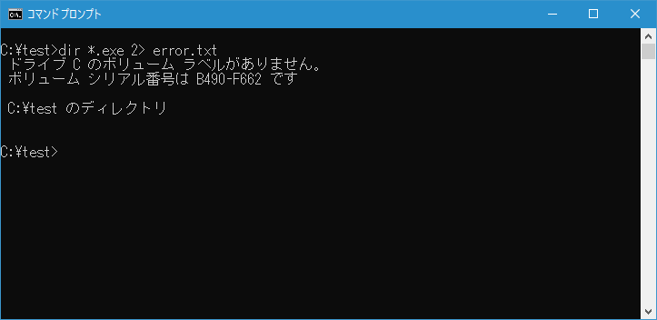

- Home ›
- コマンドプロンプトの使い方 ›
- 便利な入力機能
標準エラー出力の出力先をファイルへ変更する
コマンドを実行した時にエラーが発生した場合、標準出力ではなく標準エラー出力に対して出力が行われます。デフォルトでは標準出力と同じく標準エラー出力の出力先も画面に設定されていますが、リダイレクトを使って標準エラー出力の出力先をファイルへ変更することができます。ここでは標準エラー出力の出力先をファイルへ変更する解説します。
エラー内容をファイルへ出力する
コマンドプロンプトではコマンドの実行結果を標準出力へ出力しますが、エラーが発生した場合の出力は標準エラー出力へ出力されます。そのため、標準出力をリダイレクトでファイルへ出力するように設定していても、エラーが発生した場合は標準エラー出力へ出力されます。標準エラー出力はデフォルトで画面に設定されているのでエラーが発生した場合は画面に表示されます。
リダイレクトを使って標準出力の出力先をファイルへ変更する書式は次の通りです。
コマンド 2> ファイル名
「2>」の左側が標準エラー出力に対して出力したものを、「2>」の右側のデバイスに対して出力するように指定しています。なお「2」は標準エラー出力であるSTDERRハンドルを表す数値です。標準出力の場合と異なり「2」は省略できません。
例えば「DIR」コマンドを実行した時に、エラーが発生した場合のエラー部分の出力を error.txt というファイルに書き込むには次のように入力します。
dir 2> error.txt
出力先としてファイル名を指定した場合、指定したファイルが存在しない場合はファイルを新規に作成した上で出力を行います。既にファイルが存在した場合には新しい内容で上書きします(元々ファイルに含まれていた内容は無くなりますので注意して下さい)。
出力先に指定したファイルが既に存在していた場合、上書きではなく追加書き込みにするには次の書式を使います。
コマンド 2>> ファイル名
ファイルが既に存在していた場合、標準エラー出力の結果を既存のファイルの内容の最後に追加で書き込みます。
-- --
では実際に試してみます。まずはエラーが発生するように次のように実行してみます。

リダイレクトを設定していないので実行した結果が画面に表示されています。一見すると全てが標準エラー出力に出力されているように見えますが、実際には前半部分は標準出力、エラーが発生した後の部分が標準エラー出力に出力されています。
次にリダイレクトを使ってコマンドの実行結果の中でエラー部分をファイルへ出力してみます。

標準出力に出力されている部分は引き続き画面に表示されています。標準エラー出力へ出力されている部分は「error.txt」へ出力されました。このファイルは存在していませんでしたので新規にファイルが作成された上でエラーの部分が書き込まれています。またこの時、エラー部分に関しては画面には何も出力されていません。
では「error.txt」ファイルをテキストエディタで開いてみます。
エラー部分がファイルに書き込まれていることが確認できました。
標準出力と標準エラー出力の両方をリダイレクトしてファイルへ出力する
標準出力と標準エラー出力のどちらかではなく、標準出力と標準エラー出力の両方をファイルへ出力する場合には次のように記述します。
コマンド > ファイル名 2>&1
この書式の中で「2>&1」は標準エラー出力(ハンドル数値2)を標準出力(ハンドル数値1)へリダイレクトすることを表しています。ファイルではなく既存のハンドルへリダイレクトする時は「&」の後にハンドルの数値を指定します。結果としてこの書式は標準エラー出力を標準出力へ出力し、さらにコマンドの標準出力をファイルへ出力しますので、標準出力も標準エラー出力もファイルへ出力されることになります。
では先ほどサンプルを次のように書き換えて実行します。
今回は標準出力の部分も標準エラー出力の部分もどちらもリダイレクトしてファイルへ出力していますので、画面には何も表示されません。では「result.txt」ファイルをテキストエディタで開いてみます。
標準出力の部分も、標準エラー出力の部分も、どちらもファイルに書き込まれていることが確認できました。
-- --
コマンドプロンプトで標準エラー出力の出力先をファイルへ変更する方法について解説しました。
( Written by Tatsuo Ikura )

著者 / TATSUO IKURA
初心者～中級者の方を対象としたプログラミング方法や開発環境の構築の解説を行うサイトの運営を行っています。